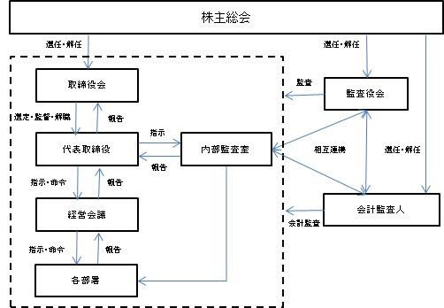

該当事項はありません。
該当事項はありません。
③ 【その他の新株予約権等の状況】
該当事項はありません。
該当事項はありません。
(注) 有償第三者割当(オーバーアロットメントによる売出しに関連した第三者割当増資)
発行価格 1,932円
資本組入額 966円
割当先 大和証券株式会社
2023年12月31日現在
(注) 自己株式43,144株は、「個人その他」に431単元、「単元未満株式の状況」に44株を含めて記載しております。
2023年12月31日現在
2023年12月31日現在
(注) 「単元未満株式」の欄には、自己株式44株が含まれております。
2023年12月31日現在
【株式の種類等】 普通株式
該当事項はありません。
該当事項はありません。
該当事項はありません。
（注）当期間における取得自己株式には、2024年３月１日から有価証券報告書提出日までに取得した株式数は含めておりません。
当社は、利益配分につきましては、経営体質の強化と今後の事業展開や内部留保等を総合的に勘案したうえで、連結ベースの配当性向50%を目標に安定した配当を継続して行うことを基本方針としております。
当事業年度の配当につきましては、上記方針に基づき１株当たり114.84円の配当を実施することを決定しました。この結果、当事業年度の配当性向（連結）は61.0%となりました。
内部留保資金につきましては、今後予想される経営環境の変化に対応すべく、今まで以上にコスト競争力を高め、市場ニーズに応える技術・開発体制を強化し、さらには、グローバル戦略の展開を図るために有効投資してまいりたいと考えております。
剰余金の配当については、期末配当の年１回を基本的な方針としておりますが、株主様に対する経営成果の利益還元を極力タイムリーに実現できるよう、将来の四半期配当実施を見越して、定款では四半期配当の旨を定めております。配当の決定機関は、取締役会決議によって行うことができる旨を定款で定めております。
なお、当事業年度に係る剰余金の配当は以下のとおりであります。
① コーポレート・ガバナンスに関する基本的な考え方
当社のコーポレート・ガバナンスに関する基本的な考え方は、経営の透明性を高め、実効性のあるコンプライアンス体制を構築し、ゴーイングコンサーンを前提とした企業価値の最大化を目指すというものであります。
なお、当社の主要株主であるＧＭＯインターネットグループ株式会社は当社の親会社に該当しており、当社は、支配株主との取引等を行う際における少数株主の保護の方策に関する指針として、支配株主等との取引条件等におきましては、「GMOグループ間取引管理規程」に基づき、他の会社と取引を行う場合と同様に契約条件や市場価格を見ながら合理的に決定し、その可否、条件等につき少数株主の権利を不当に害することのないよう十分に検討したうえで取引を実施する方針としております。
② 企業統治の体制
イ．会社の機関の基本説明
当社は取締役会設置会社であり、かつ監査役会設置会社であります。
取締役会は、社外取締役１名を含む取締役８名で構成されており、毎月の定例取締役会のほか、必要に応じて臨時取締役会を開催しております。取締役会では、経営上の意思決定機関として、「取締役会規程」に基づき重要事項を決議し、取締役の業務執行状況を監督しております。また、社外取締役は、社外の第三者の視点で取締役会への助言及び監視を行っております。
当社定款に則し「取締役会規程」により、緊急性を要する事案等について、取締役会の書面決議により即日決議することが可能と定めております。書面決議の実施に際しては、取締役全員の事前承認及び監査役全員の実施可否の判定により当該決議を実施する体制としております。
また、当社は経営会議を設置しております。経営会議は、常勤取締役、常勤監査役、各部署の部室長以上の役職者、その他取締役等が指名する者により構成し、経営に関する重要事項について審議し決裁しております。経営会議は、原則として週１回開催しております。
当社の監査役会は社内監査役１名及び社外監査役２名の計３名で構成されており、うち１名は常勤監査役であります。監査役は、取締役会に出席し、必要に応じて意見を述べるほか、取締役の職務執行を監査しております。監査役会は、毎月１回の定例の監査役会を開催するほか、必要に応じて臨時の監査役会を開催し、監査計画の策定、監査実施状況、監査結果等の検討等、監査役相互の情報共有を図っております。
なお、監査役は、内部監査室及び会計監査人と緊密な連携をとり、監査の実効性と効率性の向上を目指しております。
機関ごとの構成員は以下のとおりであります。
（◎は議長を表す）
ロ．企業統治の体制の概要
本書提出日現在の当社のコーポレート・ガバナンスの体制の概要は以下のとおりであります。

ハ．企業統治の体制を採用する理由
当社は上記のように、監査役会を設置しております。監査役会が、内部監査室及び会計監査人との連携を図りながら、独立した監査機能を担うことによって、適切なコーポレート・ガバナンスが実現できると考え、現在の体制を採用するものであります。
ニ．内部統制システム
当社は、業務の適正性を確保するための体制として、「内部統制システム構築の基本方針」を定めており、現在その基本方針に基づき内部統制システムの運用を行っております。その概要は、以下のとおりであります。
１）取締役及び使用人の職務の執行が法令及び定款に適合することを確保するための体制
ａ 取締役会は、取締役及び使用人の職務執行が法令及び定款に適合することを確保するため、コンプライアンス意識の浸透、向上を図るため従業員に対するコンプライアンス教育を実施する。
ｂ 内部監査室によりコンプライアンス体制の有効性について監査が行われるとともに、コンプライアンス体制の状況は社長に報告される。
ｃ 各取締役は、取締役又は使用人の職務の執行が法令・定款に適合していない事実を発見した場合、取締役会及び監査役会に報告する。
ｄ 監査役は、取締役及び使用人の職務の執行について監査を行う。
２）取締役の職務の執行に係る情報の保存及び管理に関する体制
取締役の職務の執行に係る情報は、文書管理規程等に従って文書又は電磁的記録により適切に保存、管理を行う。取締役及び監査役は、これらの情報を常時閲覧することができる。
３）損失の危険の管理に関する規程その他の体制
ａ リスク管理を経営の重要課題と位置付け、リスクマネージメント規程に基づき、コンプライアンス推進委員会を設置し、同委員会でリスク管理に関する体制の方針の決定、及び各部署のリスク管理体制についての評価、指導を行う。
ｂ 内部監査室は、リスク管理の状況を監査するとともに、内部監査の実施によって損失の危険のある業務執行行為を発見した場合には、発見した危険の内容、損失の程度等について経営会議及び監査役会に報告する。
４）取締役の職務の執行が効率的に行われることを確保するための体制
ａ 取締役会は月１回定時取締役会を開催し、必要に応じて臨時取締役会を開催する。
ｂ 取締役会から委嘱された業務執行については、社長を議長とし常勤取締役、常勤監査役を主要なメンバーとする経営会議を原則毎週１回開催し、その審議を経て執行決定を行う。
ｃ 組織規程、業務分掌規程、職務権限規程等により各取締役の担当、権限、責任を明確化する。
５）当該株式会社並びにその親会社及び子会社からなる企業集団における業務の適正を確保するための体制
ａ 当社と親会社との間における不適切な取引又は会計処理を防止するための監査体制を会計監査人とも連携して整備する。
ｂ 関係会社管理規程に基づき、子会社は定められた事項について随時報告することとし、社長統轄のもと、各担当部門が子会社に対する必要な業務の執行及び管理を行う。
ｃ 子会社との連絡・情報共有により、その状況を把握し、適時に協議・指示等を行う。
ｄ 監査役及び内部監査室が子会社監査を実施することにより業務の適正を確保する。
６）監査役がその職務を補助すべき使用人を置くことを求めた場合における当該使用人に関する事項
監査役会において監査役の職務を補助すべき使用人を求める決議がされた場合は、速やかに使用人を選任し、監査役の指揮命令のもとで、業務を補助する体制をとる。
７）監査役の補助をすべき使用人の取締役からの独立性に関する事項
監査役の職務を補助すべき使用人の独立性を確保するため、当該使用人の任命、異動、人事考課等の人事権に係る事項の決定は、各監査役の同意を得る。
８）監査役の６）の使用人に対する指示の実効性の確保に関する事項
必要に応じて監査役が求めた場合には、監査役の業務補助のための監査役スタッフを置くこととし、当該使用人が他部署と兼務する場合には、監査役に係る業務を優先して従事するものとする。
９）取締役及び使用人が監査役に報告をするための体制、その他の監査役への報告に関する体制
ａ 監査役は取締役会、経営会議その他重要な会議に出席し、報告を受ける。
ｂ 監査役は当社及び子会社の稟議書等重要な決裁書類等を閲覧し、必要に応じて取締役、使用人等に その説明を求め、重要な意思決定の過程及び業務の執行状況を把握することができるものとする。
ｃ 当社及び子会社の取締役及び使用人は、以下に定める事項について発見したときは直ちに監査役にこれを報告する。
１. 会社の信用を大きく低下させたもの、又はそのおそれのあるもの
２. 会社の業績に大きく悪影響を与えたもの、又はそのおそれのあるもの
３. 社内規程への違反で重要なもの
４. その他上記１～３に準じる事項
ｄ 監査役へ報告を行った者が、当該報告をしたことを理由として不利な取扱いを受けないことを確保する体制とする。
10）監査役の職務の執行について生ずる費用または債務の処理にかかる方針に関する事項
監査役が、その職務の執行について生ずる費用の前払いまたは償還等の請求をしたときは、当該監査役の職務の執行に必要でないと認められた場合を除き、速やかに当該費用または債務を処理する。
11）その他監査役の監査が実効的に行われることを確保するための体制
ａ 監査役は、内部監査室と緊密な連携を図り、効率的な監査を行う。
ｂ 監査役は、会計監査人と情報・意見交換等の緊密な連携を図り、効率的な監査を行う。
ｃ 監査役と代表取締役は、定期的に情報・意見交換を行い、相互の意思疎通を図る。
ホ．反社会的勢力排除に向けた基本的な考え方及びその整備状況
当社では、「反社会的勢力排除に関する規程」及び「反社会的勢力対応マニュアル」を整備し、反社会的勢力の排除に向けた仕組みを構築しております。取引先・株主・役員・従業員につきましては、当社では日経テレコン等を利用し、反社会的勢力に該当するかどうかを確認しております。また、取引先との間で締結する取引基本契約においては、取引先が反社会的勢力等とかかわる企業、団体等であることが判明した場合には契約を解除できる旨の条項を規定しております。
ヘ．業務の適正を確保するための体制の運用状況の概要
当社は、上記の内部統制システムの整備、運用を行っております。また取締役会において、継続的に経営上の新たなリスクの対応策について検討し、必要に応じて社内の諸規程及び業務の見直しを行うことにより、内部統制システムの実効性の向上を図っております。さらに常勤監査役については社内の重要な会議に出席し、業務執行の状況やコンプライアンスに関するリスクを監視できる体制を整備しており、内部監査担当部門についても定期的な内部監査の実施により、日々の業務が法令・定款、社内規程等に違反していないかを検証しております。
ト．リスク管理体制の整備の状況
当社のリスク管理体制は、「職務権限稟議規程」及び「職務権限稟議基準表」に基づき、取締役及び使用人の権限と責任を明確に定めるとともに、これに基づくリスク管理体制を構築することにより、リスクの軽減を図るものであります。
③ 取締役会で決議できる株主総会決議事項
イ．自己株式の取得
当社は、会社法第165条第２項の規定により、取締役会の決議をもって、自己の株式を取得できる旨を定款に定めております。これは、経営環境の変化に対応した機動的な資本政策の遂行を可能とするため、市場取引等により自己の株式を取得することを目的とするものであります。
ロ．剰余金の配当
当社は、会社法第459条第１項の規定により、取締役会の決議によって毎年３月31日、６月30日、９月30日、12月31日を基準日として、剰余金の配当を行うことができる旨、定款で定めております。これは、迅速かつ機動的な配当政策の立案並びに実行を図るとともに、株主への極力タイムリーな利益還元を可能にするためであります。
④ 取締役の定数
当社の取締役は11名以内とする旨を定款に定めております。
⑤ 取締役の選任の決議要件
当社では、取締役の選任決議は、議決権を行使できる株主の議決権の過半数を有する株主が出席し、その議決権の過半数をもって行う旨、及び取締役の選任については、累積投票によらない旨を定款に定めております。
⑥ 責任限定契約の概要
当社と、社外取締役橋本昌司氏、社外監査役手塚奈々子氏、監査役松井秀行氏、社外監査役浜谷正俊氏は、会社法第427条第１項の規定に基づき、同法第423条第１項の損害賠償責任を限定する契約を締結しております。当該契約に基づく損害賠償責任の限度額は、法令が定める額としております。
⑦ 役員等賠償責任保険契約の内容の概要
当社は、会社法第430条の３第１項に規定する役員等賠償責任保険を保険会社との間で締結しております。当該保険契約の被保険者の範囲は、当社のすべての取締役、監査役、及び管理職であります。
被保険者が当社の役員としての業務につき行った行為（不作為を含む）に起因して損害賠償請求がなされたことにより、被保険者が被る損害賠償金や争訟費用等を補償することを保険の内容としております。ただし、贈収賄などの犯罪行為や意図的に違法行為を行った役員自身の損害等は補償対象外とすることにより、役員等の職務の執行の適正性が損なわれないように措置を講じております。
⑧ 株主総会の特別決議要件
当社は、会社法第309条第２項に定める株主総会の特別決議要件について、議決権を行使することができる株主の議決権の３分の１以上の議決権を有する株主が出席し、その議決権の３分の２以上をもって行う旨を定款に定めております。これは株主総会における特別決議の定足数を緩和することにより、株主総会の円滑な運営を行うことを目的とするものであります。
⑨ 取締役会の活動状況
当事業年度において当社は取締役会を17回開催しており、個々の取締役の出席状況については次のとおりであります。
取締役会における具体的な検討内容として、当社取締役会規則の決議事項、報告事項の規定に基づき、株主総会及び取締役等役員に関する事項、予算・人事組織に関する事項のほか、当社の経営に関する基本方針、決算に関する事項、重要な業務執行に関する事項、法令及び定款に定められた事項、その他の重要事項等を決議し、また、業務執行の状況、監査の状況等につき報告を受けております。
① 役員一覧
男性
(注) １．取締役橋本昌司は、社外取締役であります。
２．監査役手塚奈々子及び浜谷正俊は、社外監査役であります。
３．2024年３月18日開催定時株主総会終結の時から、１年以内に終了する事業年度のうち最終のものに関する定時株主総会終結の時までであります。
４．2024年３月18日開催定時株主総会終結の時から、４年以内に終了する事業年度のうち最終のものに関する定時株主総会終結の時までであります。
５．2022年３月18日開催定時株主総会終結の時から、４年以内に終了する事業年度のうち最終のものに関する定時株主総会終結の時までであります。
６．2023年３月22日開催定時株主総会終結の時から、４年以内に終了する事業年度のうち最終のものに関する定時株主総会終結の時までであります。
② 社外役員の状況
当社の社外取締役は１名、社外監査役は２名であります。
社外取締役橋本昌司は、当社と人的関係、資本関係又は取引関係その他の利害関係はありません。
社外監査役手塚奈々子及び社外監査役浜谷正俊は、当社と人的関係、資本関係又は取引関係その他の利害関係はありません。
当社は、社外取締役又は社外監査役を選任するための独立性に関する基準又は、方針として明確に定めたものはありませんが、選任にあたっては、経歴や当社との関係を踏まえて、社外役員としての職務を遂行できる十分な独立性が確保できることを前提に判断しております。
社外取締役及び社外監査役に対しては、取締役会開催の都度、事前に情報伝達を行うとともに、経営に与える影響が大きい議案に関しては事前確認を行っております。また、社外監査役は常勤監査役と定期的に情報共有を行っております。
③ 社外取締役又は社外監査役による監督又は監査と内部監査、監査役監査及び会計監査との相互連携並びに内部統制部門との関係
社外取締役は、「第４ 提出会社の状況 ４ コーポレート・ガバナンスの状況等 (1) コーポレート・ガバナンスの概要 ②企業統治の体制」に記載のとおり、取締役会に出席し、適宜発言・提言を行うこと等により、会社経営を監督しております。
社外監査役は、「第４ 提出会社の状況 ４ コーポレート・ガバナンスの状況等 (1) コーポレート・ガバナンスの概要 ②企業統治の体制」に記載のとおり、取締役会及び監査役会に出席し、適宜発言・提言を行うこと等により、会社経営を監督しております。また、「第４ 提出会社の状況 ４ コーポレート・ガバナンスの状況等 (3) 監査の状況 ①監査役監査の状況」に記載のとおり、会計監査人及び内部監査室と相互連携を図っております。
④ 当社は、法令に定める監査役の員数を欠くことになる場合に備え、会社法第329条第３項に定める補欠社外監査役１名を選任しております。
補欠社外監査役の略歴は次のとおりであります。
(3) 【監査の状況】
① 監査役監査の状況
当社の監査役会の体制は、常勤の社外監査役、非常勤の社外監査役及び非常勤の監査役の計３名であります。社外監査役である手塚奈々子氏及び浜谷正俊氏は、公認会計士の資格を有し、財務及び会計に関する相当程度の知見を有しております。
各監査役は、監査役会が決定した監査方針及び監査計画に基づき、取締役会に出席し、経営全般についての適法性・適正性を監査しております。また、常勤監査役は経営会議その他の会議に出席するほか、国内拠点・海外子会社への往査などにより、実効性ある監査手続を実施しております。
また、監査役会は、内部監査室及び会計監査人と連携を取りながら監査を実施しております。特に常勤監査役と内部監査室担当者は緊密に連携し、実効性のある監査の実施に努めております。
当事業年度において当社は監査役会を12回開催しており、個々の監査役の出席状況は次のとおりであります。
当事業年度における監査役会の主な検討事項は、内部統制・ガバナンスの強化、会計監査人に関する評価、常勤監査役の職務執行状況等であります。また、常勤監査役の活動として、経営会議その他の重要会議への出席、重要な決裁書類の閲覧、部門管理者等の重要な業務執行者との意見交換、国内拠点・海外子会社へのヒアリング等を実施しております。
② 内部監査の状況
当社は、代表取締役社長直轄の組織として、他の部門から独立した形で内部監査室を設置しております。
内部監査室は、法令・定款・社内規程等の遵守状況、並びに内部統制システム及びリスク管理体制の運用状況等について監査し、内部統制上の課題と改善策を助言・提言することで、内部統制の一層の強化を図っております。
内部監査室は、内部監査の計画及び実施結果について、代表取締役社長に直接報告するほか、当社の取締役会並びに監査役及び監査役会に対しても定期的に直接報告を行うことで、内部監査の実効性を担保しております。また、内部監査室は、監査役及び監査役会、会計監査人とも、各々の監査計画や監査の進捗状況等の情報を共有し、意見交換を行うことにより、連携を図り内部監査の有効性、効率性を高めております。
③ 会計監査の状況
ａ．監査法人の名称
EY新日本有限責任監査法人
b．継続監査期間
2022年12月期以降の２年間
c．業務を執行した公認会計士
指定有限責任社員 業務執行社員 矢部 直哉
指定有限責任社員 業務執行社員 大澤 一真
d．監査業務に係る補助者の構成
公認会計士 ５名
その他 18名
e．監査法人の選定方針と理由等
会計監査人の専門性や適格性、品質管理体制、独立性、当社の事業規模や事業内容に適した監査計画の策定と実施、監査チームの編成等を総合的に評価し、選定しております。
監査役会は、会計監査人の職務の執行に支障がある場合等、その必要があると判断した場合は、株主総会に提出する会計監査人の解任又は不再任に関する議案の内容を決定いたします。
監査役会は、会計監査人が会社法第340条第１項各号に定める項目に該当すると認められる場合は、監査役全員の同意に基づき会計監査人を解任いたします。この場合、監査役会が選定した監査役は、解任後最初に招集される株主総会におきまして、会計監査人を解任した旨と解任の理由を報告いたします。
f．監査役及び監査役会による監査法人の評価
監査役及び監査役会は、会計監査人の専門性や適格性、品質管理体制、独立性、監査計画の内容とその執行状況、監査チーム編成のほか、被監査部門である業務執行部門とのコミュニケーション、監査報酬内容及び水準等について総合的に評価を行っております。
④ 監査報酬の内容等
ａ．監査公認会計士等に対する報酬
b．監査公認会計士と同一のネットワークに対する報酬(a.を除く)
c．その他重要な報酬の内容
該当事項はありません。
d．監査報酬の決定方針
会計監査人の監査計画の内容、会計監査人の業務執行状況及び報酬見積りの算出根拠等について総合的に勘案し、会計監査人と協議のうえ、監査役会の同意を得て、監査報酬の額を決定しております。
e．監査役会が会計監査人の報酬等に同意した理由
監査役会は、会計監査人の業務執行状況及び報酬見積りの算定根拠などが適切であるかどうかについて必要な検証を行ったうえで、会計監査人の報酬等の額について、会社法第399条第１項の同意を行っております。
f．監査法人の異動
当社の監査法人は次のとおり異動しております。
第20期連結会計年度（自2021年１月１日至2021年12月31日） 有限責任監査法人トーマツ
第21期連結会計年度（自2022年１月１日至2022年12月31日） EY新日本有限責任監査法人
なお、臨時報告書に記載した事項は次のとおりであります。
(1）当該異動に係る監査公認会計士等の名称
① 選任する監査公認会計士等の名称
EY新日本有限責任監査法人
② 退任する監査公認会計士等の名称
有限責任監査法人トーマツ
(2）当該異動の年月日
2022年３月18日（第20期定時株主総会開催日）
(3）退任する監査公認会計士等が監査公認会計士等となった年月日
2014年７月１日
(4）退任する公認会計士等が直近３年間に作成した監査報告書等における意見等
該当事項はありません。
(5）異動の決定又は異動に至った理由及び経緯
当社の会計監査人である有限責任監査法人トーマツは、2022年３月18日開催の第20期定時株主総会終結の時をもって任期満了となります。監査役会は、EY新日本有限責任監査法人を起用することにより、新たな視点での監査が期待できることに加え、同監査法人の専門性、独立性、品質管理体制及びグローバル監査体制について検討を行った結果、適任であると判断いたしました。また、当社親会社であるＧＭＯインターネット株式会社（現 ＧＭＯインターネットグループ株式会社）においても、2022年３月20日開催の2021年12月期定時株主総会において公認会計士等の異動が行われ、EY新日本有限責任監査法人を新たな公認会計士等として選任しております。これに伴い、当社も会計監査人を統一することでグループにおける連結決算監査及びガバナンスの有効性、効率性の向上が図れると判断し、EY新日本有限責任監査法人を当社の会計監査人としております。
(6）上記(5)の理由及び経緯に対する意見
① 退任する公認会計士等の意見
特段の意見はない旨の回答を得ております。
② 監査役会の意見
妥当であると判断しております。
(4) 【役員の報酬等】
① 役員の報酬等の額又はその算定方法の決定に関する方針に係る事項
取締役の報酬額は、株主総会で決議された報酬額限度内で、職務及び会社の業績等を勘案し、取締役会にて決定しております。
取締役の報酬限度額は、2023年３月22日開催の定時株主総会の決議により、報酬総額の最高限度額を設定しており、220百万円以内（うち社外取締役10百万円以内）であります。
監査役の報酬限度額は、2023年３月22日開催の定時株主総会の決議により、報酬総額の最高限度額を設定しており、24百万円以内であります。
イ．当該方針の決定の方法
当社は、取締役の個人別の報酬等の内容に係る決定方針を2021年２月15日開催の取締役会において、決議しております。
ロ．当該方針の内容の概要
当社の取締役の報酬は、固定報酬と業績連動報酬により構成されておりますが、その割合については定めておりません。また、当社の取締役の報酬には、非金銭的報酬はありません。
固定報酬は、役職ごとに内規で定めた基準額に、前事業年度の連結業績指標や個人業績指標等を加味して決定しております。監督機能を担う社外取締役については、その職務に鑑み、固定報酬のみの構成としており、株主総会の決議によって定められた報酬枠の範囲内において、取締役会により決定いたします。
業績連動報酬は、親会社株主に帰属する当期純利益を業績連動指標として採用しております。親会社株主に帰属する当期純利益を業績指標として採用した理由は、ステークホルダーへの配当原資となる親会社株主に帰属する当期純利益を指標として用いることで、ステークホルダーとの建設的な対話を行い、中長期的な企業価値の向上を取締役に意識づけるためであります。業績連動指標が基準値を上回った場合に、基準値超過額を限度として、業績連動指標の一定割合を役員賞与の支給額として算出し、取締役会により決定します。
ハ．当該事業年度に係る個人別報酬の内容が当該方針に沿うものであると取締役会が判断した理由
取締役会で決定された報酬等の基本方針及び当該手続に基づき決定されていることから、取締役の個人別の報酬等の内容の決定方針に沿うものであると判断しております。当事業年度においては、2023年３月22日開催の取締役会において決定しております。
② 業績連動報酬に関する事項
業績連動報酬として、取締役に対して賞与を支給しております。
業績連動報酬の額の算定の基礎として選定した業績指標の内容は、各事業年度の当社の親会社株主に帰属する当期純利益であります。親会社株主に帰属する当期純利益を業績指標として採用した理由は、ステークホルダーへの配当原資となる親会社株主に帰属する当期純利益を指標として用いることで、ステークホルダーとの建設的な対話を行い、中長期的な企業価値の向上を取締役に意識づけるためであります。
業績連動報酬の算定方法は、業績連動指標が基準値を上回った場合に、基準値超過額を限度として、業績連動指標の一定割合を役員賞与の支給額として算出し、取締役会により決定します。
当事業年度における業績連動指標は、親会社株主に帰属する当期純利益の基準値383百万円に対し、実績値は307百万円となりました。
③ 役員区分ごとの報酬等の総額、報酬等の種類別の総額及び対象となる役員の員数
④ 役員ごとの連結報酬等の総額
連結報酬等の総額が１億円以上である者が存在しないため、記載しておりません。
⑤ 使用人兼務役員の使用人給与のうち重要なもの
使用人兼務役員の使用人給与のうち重要なものがないため、記載しておりません。
(5) 【株式の保有状況】
当社は、保有目的が純投資目的である投資株式と純投資目的以外の目的である投資株式の区分について、当該投資株式を専ら株式の価値の変動又は株式に係る配当によって利益を受けることを目的として保有する場合を純投資目的、それ以外の目的で当該投資株式を保有する場合を純投資目的以外の目的として区分しております。
上場株式を保有していないため、省略しております。
（当事業年度において株式数が減少した銘柄）
該当事項はありません。
該当事項はありません。
該当事項はありません。
該当事項はありません。
該当事項はありません。